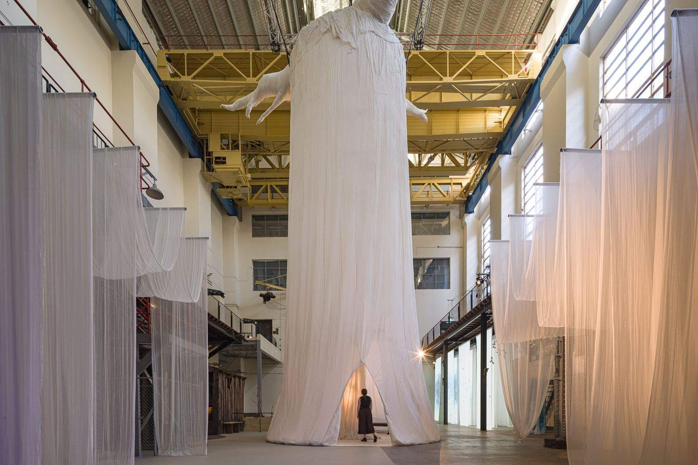

Festivals · Arts
26th Biennale of Sydney (2028)
- Dates
- Dates TBA
- Location
- Sydney, Australia
- Format
- In-person
- Category
- Arts
- Industry
- Arts
- Organiser
- Biennale of Sydney
- Expected attendance
- 777,386
- Official website
- https://www.biennaleofsydney.art/
About
Topics: contemporary art, exhibition.
Official: the 24th Biennale (9 March - 10 June 2024) attracted 777,386 visitors. No figure yet for the 2026 edition.